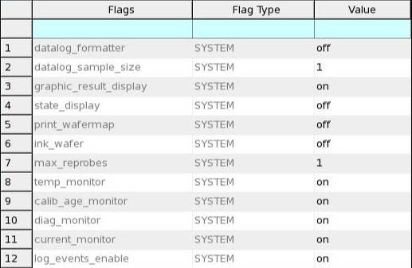
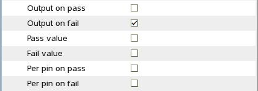

Data logging settings
The settings for data logging can substantially influence the testing time. Generally speaking, you should keep data logging and other data output functions to the absolute minimum possible to maximize throughput and decrease testing times.
You can make test setting either manually by adjusting the various flags or automatically using Data Logging Profiles. We strongly recommend that you use profiles, because they are much easier and quicker to use once set up. They are also more reliable: It is no longer possible to accidentally leave a setting in a non-optimal position.
Settings
We recommend that you use the settings below for reporting and data logging in production settings.
Note that other settings than the ones given here are certainly possible when there is a reason for them, but you should be aware that this will negatively impact test times.
System flags
If you are using profiles, use these settings:
*.*.*.datalog_formatter = 0 *.*.*.temp_monitor = 0 *.*.*.calib_age_monitor = 0 *.*.*.diag_monitor = 0 *.*.*.current_monitor = 0
If you are using the graphical user interface, set these options:
- datalog_formatter: off
- temp_monitor: off
- calib_age_monitor: off
- diag_monitor: off
- current_monitor: off
Test suite flags
If you are using profiles, use this setting:
*.*.*.datalog_detail = 0
If you are using the graphical user interface, set these options:
- Pass value: off
- Fail value: off
- Per pin on pass: off
- Per pin on fail: off
Examples
Data logging profile
*.*.*.datalog_formatter = 0 *.*.*.temp_monitor = 0 *.*.*.calib_age_monitor = 0 *.*.*.diag_monitor = 0 *.*.*.current_monitor = 0 *.*.*.datalog_detail = 0
Graphical user interface


Functional changes
- Introduced before SmarTest 6.3.2
- SmarTest 7.2.0: Removed report_to_file flag
- SmarTest 7.2.0: Removed report_to_printer flag
- SmarTest 7.2.0: Removed datalog_to_file flag
- SmarTest 7.2.0: Removed datalog_to_printer flag
- SmarTest 7.2.0: Removed datalog_to_report_win flag
- SmarTest 7.4.5: Removed stdf_generation flag